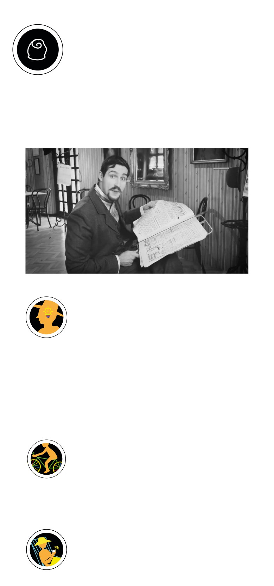

TINDER - 1900
Üdvözlünk a dolgozószobában! Ez itt a nagyfőnök birodal-
ma. Innen igazgat négy gyárat, és több vendéglátóhelyet,
hogy mindegyikből kihozza a legtöbb lehetőséget. Kattints
a videóra, hogy megtudd, hogy érdemes gondolkodni a
lehetőségekről!
Ha esetleg nem tudod, miről van szó, nézd meg bevezető videónkat és
a letölthető tanári segédletet, melyeket itt (kezdő oldal vagy videó linkje)
találsz.
Youtube
HASZNÁLD A FEJED!
Ha ma is úgy létezne a Gerbeaud-cég, mintannak idején,
és az ajánlataik közt szerepelne egy épületséta, ahol min-
dent be lehet járni, mi szerepelne a programban?
- Írjatok legalább három helyszínt, ami benne lenne a túrában!
- Mindenhova írjatok egy tényt, amit biztos el kellene mondanotok a hely-
színről, és egy érdekességet, ami szerintetek érdekelheti a közönséget.
- Találjatok ki legalább egy helyszínre valamilyen játékot/aktivitást, (pl. Ki
talál több rejtett liliom jelet a dolgozószobában, mert ez a lakberendező
poénja volt, stb...) ami szórakoztatja a csoportot, de kötődik valahogy a
témához.
PATTANJ FEL!
Szinte minden régi helynek, közösségnek vannak sajátos
legendái, amik akár igazak, akár nem, vonzzák a turistákat.
Ha ti találhatnátok ki egy ilyet a Gerbeaud-nak, mi lenne az?
Keressetek tényeket a kiállításban, és csapatonként írjatok egy olyan krea-
tív kamut, ami vonzaná turistákat. A sztoriban legyen legalább egy valós
tény/személy (mindegy, hogyan szerepel benne, csak érdekes legyen).
EGY KIS LAZÍTÁS…
cort-fiuk-a-szocializmusban/